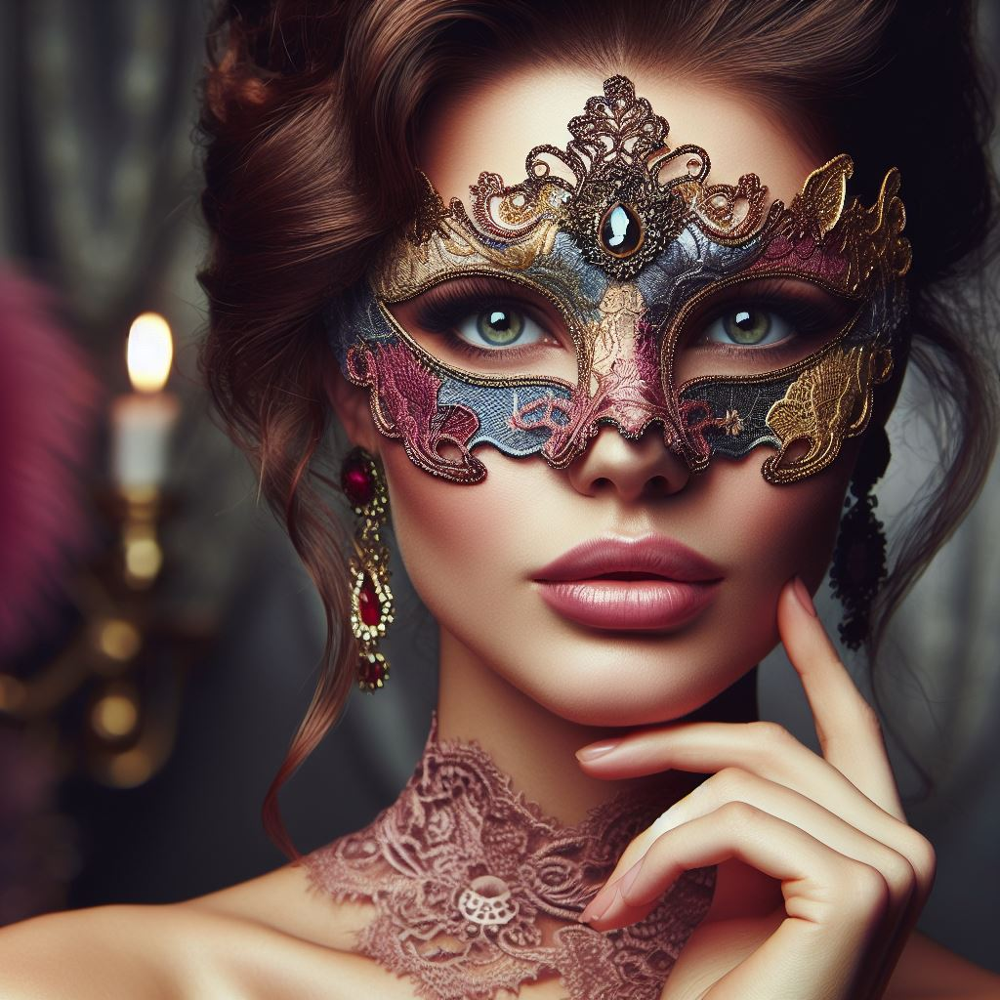

Description : Madame Isabelle Rousseau est une artiste passionnée et mystèrieuse, connue pour son talent remarquable et son esprit libre. Elle arbore souvent des tenues excentriques et des accessoires artistiques, reflétant sa personnalité créative et non conventionnelle.
- Motivations : Isabelle est motivée par son désir de liberté artistique et d'expression personnelle. Elle cherche constamment à repousser les limites de son art et à explorer de nouvelles formes d'expression, indépendamment des conventions sociales ou des attentes du public.
- Relations : Isabelle entretient des relations éphémères avec de nombreux membres de la société artistique, mais elle a du mal à établir des liens durables avec les autres. Sa nature indépendante et son esprit libre font d'elle une figure marginale dans les cercles artistiques, mais elle est respectée pour son talent et son originalité.
- Secrets : Isabelle cache un passé tumultueux, marqué par des expériences douloureuses et des choix controversés. Elle a vécu des moments difficiles qui ont forgé son caractère et influencé son art, mais elle préfère garder ces détails cachés derrière un voile de mystère. Isabelle détient des secrets artistiques qui pourraient changer la perception que les autres ont d'elle en tant qu'artiste. Ces secrets pourraient révéler des choix artistiques controversés ou des influences inattendues sur son travail, remettant en question sa réputation créative.